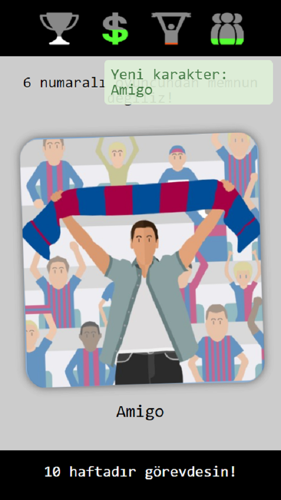
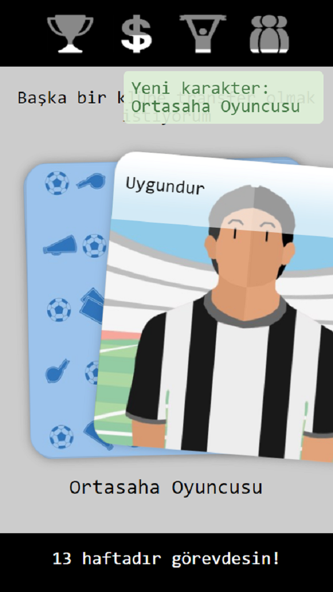
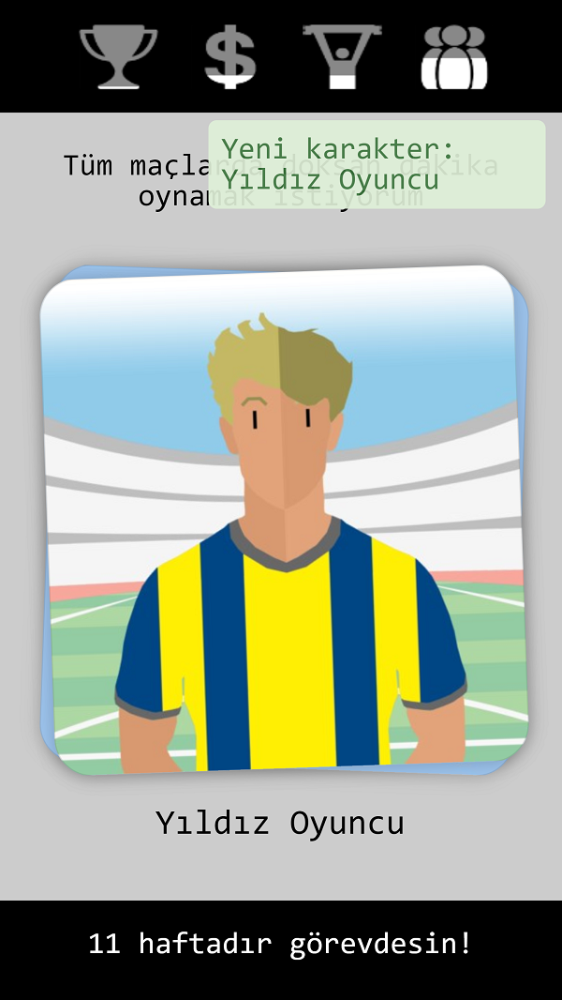
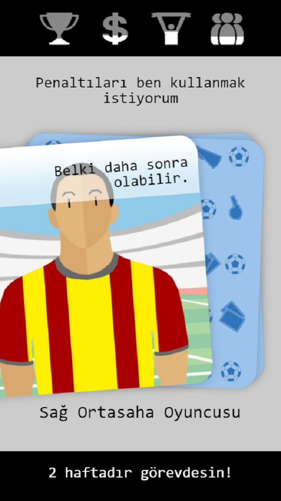
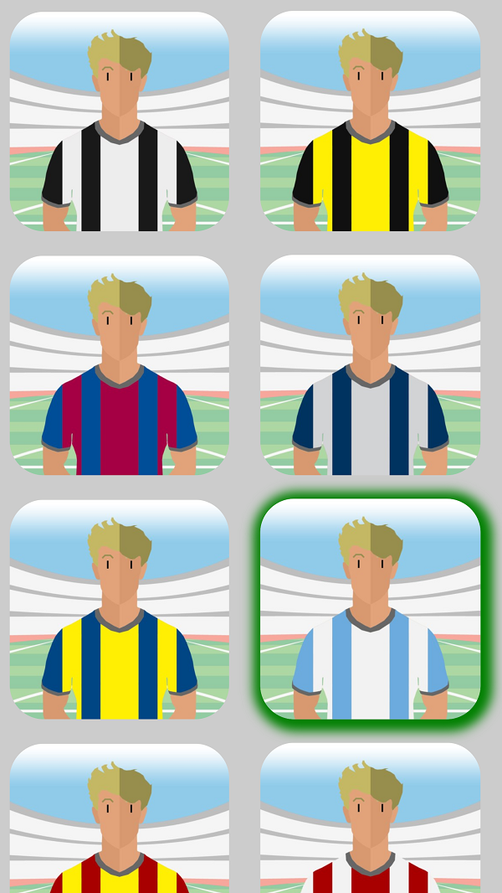
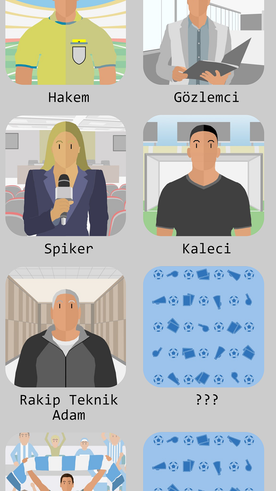
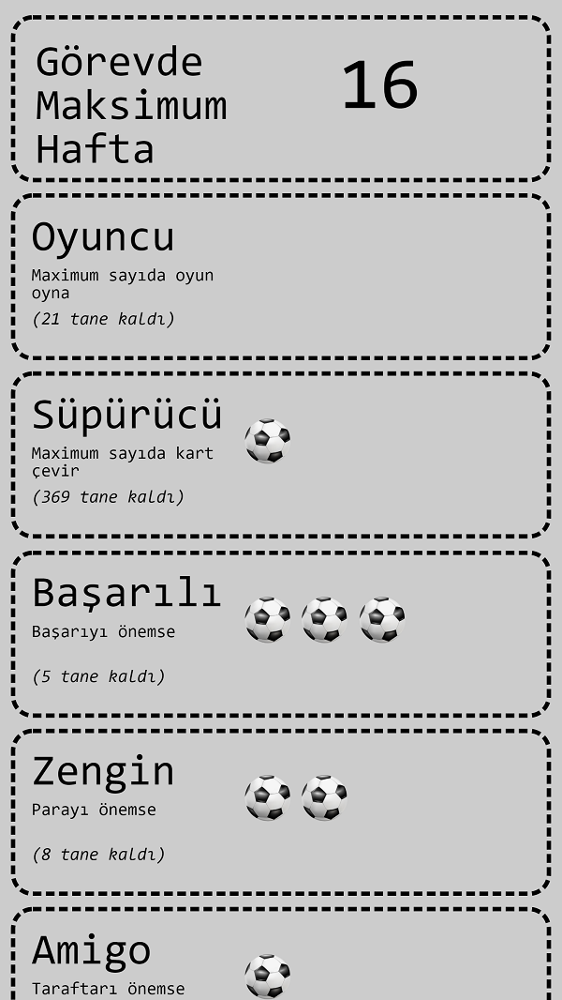
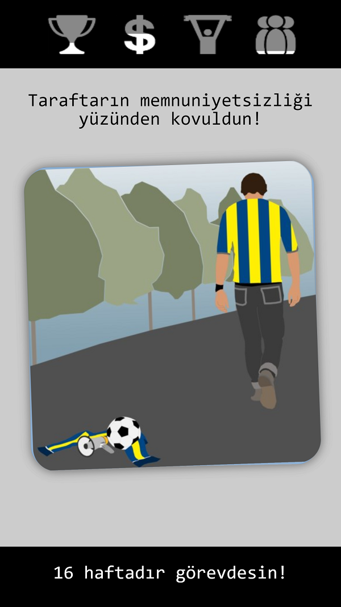
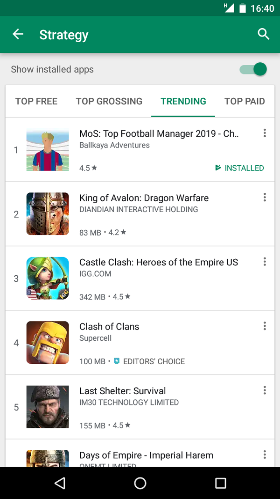

Açıklama
Düşüşte olan bir futbol takımının başına yönetici olarak getirildin.
Takımın başarısı, maddi durumu, taraftarın memnuniyeti ve takım oyuncularının mutluluğu vereceğin kararlara bağlı.
Karşına çıkan karakter kartlarını sağa ya da sola çevirerek soruları cevapla. En uzun süre takımın başında kalmaya çalış. Tüm başarıları topla.
Oyundaki tüm karakterleri keşfetmeye çalış. Forma rengini belirle.
Oyunda reklam bulunmamaktadır. İnternetsiz de oynayabilirsin.
Platform:Android - IOS (yakında)
Çıkış tarihi: 27 Şubat 2019
Fiyat:Ücretsiz
Video
Ekran görüntüleri
      
Detay
Tamamen Türk yapımı strateji tabanlı rol yapma oyunu Futbolun Efendilerinde, amaç tüm kategorileri (Başarı-Para-Taraftar-Futbolcular) dengede tutmaya çalışarak en uzun hafta görevde kalmak.
Bunun yanında tüm başarıları toplamaya çalışabilir, ayrıca tüm karakter kartlarını açtırmak için uğraşabilirsin.
Oyunu oynarken takımın forma renklerini seçebilirsin.
Oyun Uğur Atmaca tarafından 7 ayda geliştirildi. Rol yapma oyunlarını (RPG) oynarak büyüyen Uğur, kardeşi Ümit ile birlikte bir futbol menajerini canlandırdığın bu oyunu yapmaya karar vererek kolları sıvadılar. Grafikler konusunda https://othersapp.com'da çıktığı ilan sonrası Mert Karademir ile anlaştılar.
Herhangi bir oyun motoru kullanılmadan yazılan bu oyunun boyutu, rakiplerinin ortalama 9 kat altında (sadece 6 mb).
Oyun, daha çok kişiye ulaşabilsin diye ücretsiz yapılmış ve oyuncuları rahatsız etmemesi için reklam konulmamıştır. Eğer istenilen kitleye ulaşırsa sadece gerçek dünyada olduğu gibi forma üzerine reklam konulması planlanmıştır. Bu da yine oyuncuları rahatsız etmeyecek şekilde tasarlanacaktır.
Şimdilik en uzun süre hayatta kalma modu (survive) ile oynanan oyun için farklı görevleri yapabileceğin bir mod da geliştirilmeye devam ediliyor.
Bağımsız olarak "Ballkaya Adventures" adı altında oyunlar üretiyorlar. Bundan önceki oyun "Hayvanat Bahçesi Macerası" oyununda kendi maceranı kendin seçerek kitabın akışına karar veriyordun.
Güncellemeler
14.03.2019 : v1.1.10
4.5
500 indirmeye ulaştı.
04.05.2019 : v1.2.01
4.5
Kanal D Abbas Güçlü ile Büyük Oyun yarışmasına katıldım. 1584 indirmeye ulaştı.
Yayın sonrası strateji kategorisinde Trendlerde 1. oldu.
24.06.2020 : v1.4.04
3.9
10378 indirmeye ulaştı. Yakında güncelleme yapamadığımız için yıldızımız düştü ne yazık ki.